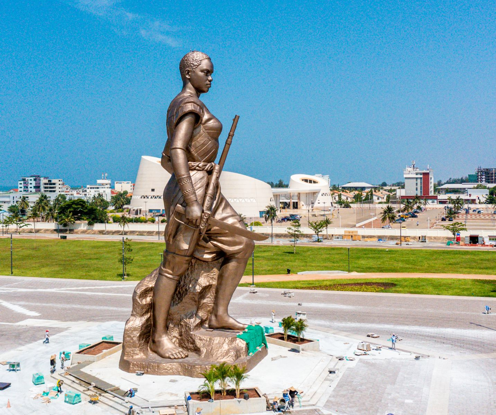
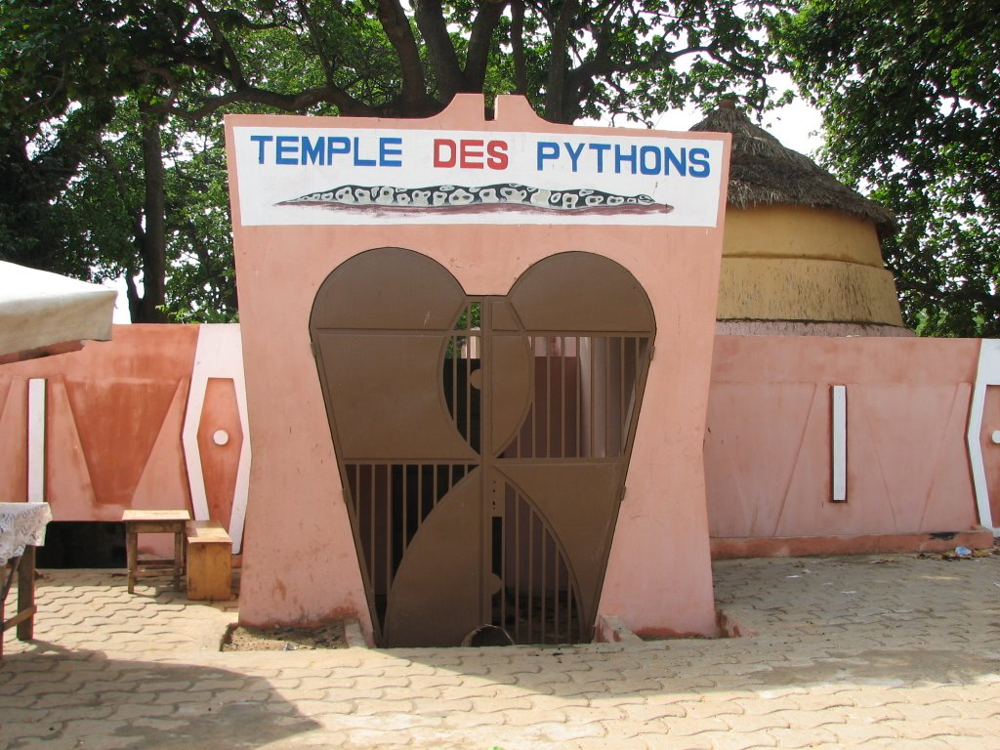
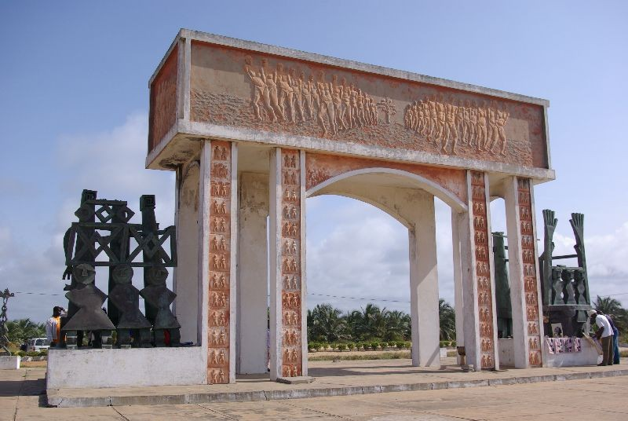

Place des Amazones
La Place des Amazones à Cotonou, Bénin, est un lieu emblématique imprégné d'histoire et de culture.
Cette place pittoresque tient son nom des célèbres Amazones, un groupe de femmes guerrières du royaume
du Dahomey, ancêtre du Bénin moderne. Entourée d'arbres majestueux,
la place offre un espace paisible au cœur de la ville animée de Cotonou.

Temple de Python de Ouidah
Le Temple de Python à Ouidah, au Bénin, est un site emblématique imprégné de mystère et de spiritualité.
Niché au cœur de la ville historique, ce temple sacré est dédié au culte du python, un serpent vénéré
dans la tradition vaudou. Les visiteurs y découvrent un lieu où la symbiose entre l'homme et le serpent
est célébrée depuis des générations.

Porte du nom retour
La Porte du Non-Retour à Ouidah, au Bénin, est un lieu emblématique chargé d'histoire et de
signification. Nichée sur le littoral atlantique, cette porte fut autrefois un point de départ pour
d'innombrables hommes, femmes et enfants réduits à l'esclavage au cours de la traite négrière
transatlantique.
